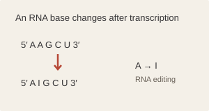
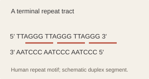
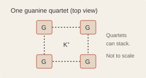
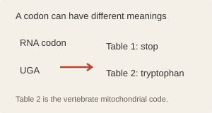
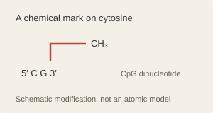
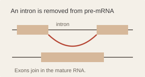

COMPOSITION
DNA SEQUENCE ANALYSIS
Explore the
architecture
of DNA.
Examine nucleotide sequences, visualize molecular patterns and explore DNA biology. Entirely in your browser.

01 / ANALYZE
Sequence input
Paste a sequence or FASTA record. IUPAC ambiguity codes are retained and reported.
START WITH AN EXAMPLE
Choose a sequence to inspect
Choose another example
Sequence text and FASTA files are processed on this device, without being sent to a server.
SEQUENCE COMPARISON
Compare two sequences
Align complete inputs and inspect substitutions, gaps, and identity.
GLOBAL ALIGNMENTNeedleman–Wunschmatch +2 · mismatch −1 · gap −2
A global alignment places both full sequences in one alignment. Scores: match +2, mismatch −1, gap −2. IUPAC symbols are compared literally. Each input is limited to 1,500 nt.
03 / RESULTS
Sequence analysis
Full input distribution
STRANDS
Transformations
Coding-strand substitution and template-strand transcription are separate operations; both RNA sequences are shown 5′ to 3′. All DNA inputs are read 5′ to 3′. Template transcription reverse-complements the input before T-to-U substitution.
WINDOW PROFILE
GC content
Each point is a complete window advanced by one nucleotide. Ambiguous bases are omitted from that window's denominator.
CANDIDATE REGIONS
Open reading frames
TRANSLATION
Six reading frames
Select a codon to inspect its translation and locate its nucleotides. Translation depends on the organism and cellular compartment. These are computational translations, not evidence of protein expression.
Select a triplet below to inspect its translation.
CODON COUNTS
Codon usage by frame
PATTERNS
Motifs and repeats
IUPAC codes match as literal symbols in this exact search. Ambiguous bases are not expanded.
SEQUENCE VIEWER
Positions, codons and complementary strand
Top strand reads 5′ to 3′. Complement runs antiparallel, 3′ to 5′. Select a base or codon for details.
Select a nucleotide or codon.
Inside the language of DNA.
A curated collection of essential molecular biology concepts, with concise explanations and links to trusted scientific resources for further reading.
Try the interactive explorers →
Genetics in everyday life
Examples of genetic variation interacting with cell biology and environment. These stories do not predict an individual's traits.
DIGESTION
Lactase persistence
Adult lactase production is associated with regulatory variants in an enhancer within MCM6 that influences nearby LCT expression. Different persistence-associated variants arose in distinct populations; the European −13910C>T variant is not a universal marker.
METABOLISM
Caffeine processing
CYP1A2 encodes a major enzyme involved in caffeine metabolism. Genetic differences can contribute to enzyme activity, while smoking, medicines, diet, and other conditions can also affect it. A variant alone cannot predict how an individual will feel after caffeine.
Further reading
SENSORY PERCEPTION
Coriander aroma perception
A genome-wide association study linked a variant near olfactory-receptor genes, including OR6A2, to reported soapy aroma perception in a European-ancestry cohort. The association was modest and does not determine whether someone likes coriander.
PIGMENTATION
Pigmentation involves many genes
Variation near HERC2 can influence expression of OCA2, which affects melanin production. Many genes contribute to eye colour, so simple dominant-recessive charts cannot capture the full range of human variation. Skin pigmentation is a distinct trait; collaborative research on South Asian cohorts has linked variation in SLC24A5 to skin pigmentation.
HEMOGLOBIN
A change in HBB
The HbS coding variant changes a glutamate codon to valine in beta-globin. It demonstrates how one coding substitution changes a protein sequence; health outcomes depend on genotype and physiology, not on a single isolated sequence result.
Further reading
Essential concepts
Four bases, one alphabet
DNA can carry very different information without changing its basic chemical construction. Each nucleotide contains a deoxyribose sugar, a phosphate group and one of four standard bases: adenine, thymine, guanine or cytosine. The sugar–phosphate backbone repeats; the changing base order carries sequence information.
Base order and biological context determine how a sequence is interpreted. A fragment may be coding, regulatory, repetitive or other DNA, rather than automatically being a gene. IUPAC symbols such as N record an unspecified base, preserving uncertainty instead of inventing a fifth standard base. RNA uses a related alphabet, usually with uracil instead of thymine.
Pairing is selective
In a canonical DNA duplex, adenine pairs with thymine and guanine with cytosine. Each pair combines a purine with a pyrimidine, maintaining a similar width across the helix. Their compatible geometry and hydrogen-bonding patterns help distinguish a correct partner from a mismatch.
A:T pairs form two canonical hydrogen bonds and G:C pairs form three, but bond counting alone does not explain duplex stability. Interactions between stacked bases, sequence order, salt and temperature also matter. Complementarity allows one strand to guide copying or repair of its partner; it does not mean every mismatch is immediately corrected.
The helix has a regular geometry
The common B form of DNA is a right-handed double helix. Base pairs stack toward its interior, while the sugar–phosphate backbones face the surrounding solution. The arrangement creates major and minor grooves with different patterns of exposed chemical groups.
These grooves help explain how proteins can recognize particular DNA sequences without separating the entire duplex: different base pairs present distinguishable chemical surfaces. DNA is also flexible enough to bend and form supercoils. Its local shape depends on sequence, hydration and interactions with other molecules, so a regular helix is a useful structural model rather than a rigid shape shared by all DNA under every condition.
Strands run in opposite directions
A DNA duplex has two chemical directions, not just two strands. The 5′ and 3′ labels refer to numbered carbon atoms in the sugar. The strands are antiparallel: one runs 5′ to 3′ while its partner runs 3′ to 5′. DNA polymerases add nucleotides at a growing strand’s 3′ end, so new DNA is synthesized 5′ to 3′.
This explains why reversing a sequence is not the same as taking its reverse complement. Complementary bases aligned beneath the input run in the opposite direction. To write that partner in the usual 5′-to-3′ convention, both its bases and their order must be changed. The distinction matters whenever two sequences are compared.
5′ ATGC 3′3′ TACG 5′Reverse complement, written 5′ → 3′5′ GCAT 3′Replication copies both strands
DNA polymerases synthesize only 5′ to 3′. How can a moving replication fork copy two antiparallel templates? One new strand grows continuously toward the fork; the other is assembled in short Okazaki fragments, each synthesized in the same chemical direction.
Helicases open the duplex, primase supplies primers and polymerases extend them using complementary bases. After primer removal and replacement, ligase joins adjacent fragments. Each daughter duplex retains one parental strand and one new strand: semiconservative replication. Proofreading and repair reduce copying errors without eliminating them. Forks can also stall; RECQL5 research examines how fork remodelling is regulated under replication stress.
Transcription makes an RNA copy
RNA polymerase uses one DNA strand as a template, reading it 3′ to 5′ while building RNA 5′ to 3′. For the transcribed interval, the RNA resembles the coding strand, with U replacing T. The choice of template depends on the gene; either chromosomal strand can serve as a template in different regions.
This is why coding-strand T-to-U substitution and template-strand transcription are different operations. Eukaryotic protein-coding transcripts are also processed before translation. Transcription changes DNA supercoiling; studies in mycobacteria connect active transcription with recruitment of topoisomerases, enzymes that manage DNA torsional stress.
Codons depend on a frame
The same letters can give different triplets if reading begins one base later. Ribosomes read mRNA as consecutive, non-overlapping codons; initiation machinery establishes the biological reading frame. This is why six computational translations of a DNA fragment are possibilities to inspect, rather than six demonstrated proteins.
AUG can initiate translation and also specifies methionine within a protein. In the standard code, 61 codons specify amino acids and three signal termination. Several codons can encode the same amino acid, but a codon’s meaning depends on the genetic code in use. Some organelles and microbes use alternatives. An ATG-to-stop interval alone cannot establish expression or function.
Chromatin packages long DNA
Packing DNA creates an access problem: the same molecule must be compact enough to fit and accessible enough to be read, copied and repaired. Eukaryotic DNA associates with proteins as chromatin. In its repeating nucleosome unit, DNA wraps around an octamer of histone proteins.
Packaging is therefore adjustable rather than permanent sealing. Remodelling complexes reposition nucleosomes, while histone variants and chemical modifications can alter interactions. These features influence access without forming a universal on/off code for genes. Work on a rice histone H4 variant illustrates how histone composition and acetylation can influence stress responses in one biological setting.
Repeats can be functional or mobile
Repeated DNA is organized in several ways. Tandem repeats place copies next to one another, while interspersed repeats occur at separated genomic locations. Many interspersed repeats derive from transposable elements, sequences capable of moving or generating new copies through DNA- or RNA-based mechanisms; many surviving copies are no longer mobile.
Repeats can contribute to chromosome structure, regulation or variation, but finding a repeated pattern does not establish its function. Telomeres contain characteristic tandem repeats. Transposable-element sequences have also been used to develop genomic markers in foxtail millet. A repeat search detects sequence patterns, not the complete biological identity of a region.
TTAGGG · TTAGGG · TTAGGGsynthetic display of a telomere motifVariation records evolutionary history
Mutations generate new sequence variants. Recombination reshuffles existing variation, while inheritance, genetic drift and natural selection influence which variants persist. Comparing homologous sequences across many genomic regions can help researchers reconstruct relationships and population history.
Those inferences require appropriate sampling, models and genomic context. A shared allele can reflect common ancestry, gene flow or other processes, and a single similarity score cannot distinguish them. Variant resources such as IndiGenomes provide data for studying diversity across samples. They also show why a reference sequence is a comparison standard, rather than a complete description of every individual’s genome.
Compare two sequencesMutations can affect different levels
A sequence change has meaning only in context. Within a coding region, a substitution can preserve an amino acid, replace it, introduce a stop or remove an existing stop. A synonymous change preserves the encoded amino acid, but it is not automatically biologically silent: RNA processing or translation can still be affected.
An insertion or deletion can shift a coding reading frame when its length is not divisible by three. Other variants affect splice sites, regulatory regions or much larger chromosome segments. Their consequences depend on the transcript, genomic location and organism. Detecting a difference alone does not establish disease, altered function or a clinical interpretation.
GAG → GTGGlu → Val in the HBB exampleOne DNA region can make different RNAs
A gene’s DNA sequence need not change for its RNA output to change. A typical eukaryotic protein-coding precursor RNA contains exons and introns. The spliceosome recognizes RNA signals, removes introns and joins exons; alternative choices can produce different mature transcripts in different tissues or developmental stages.
More RNA forms do not automatically mean more distinct proteins. Some transcripts differ only in untranslated regions; others are degraded. RNA sequences and RNA-binding proteins regulate splice choices. Studies linking methylation with splicing examine another regulatory layer, but correlation alone cannot show that a chemical mark caused a particular splice decision.
Foundational reading and sequence data resources
Teaching resources and original studies are linked beside the topics they support. These additional references cover general mechanisms and the exact reference sequence used in the analyzer.
- Molecular biology · Vishal Trivedi, IIT Guwahati · NPTEL ↗
- Eukaryotic gene expression · P. N. Rangarajan, IISc · NPTEL ↗
- DNA structure and replication · Molecular Biology of the Cell, NCBI Bookshelf ↗
- Gene expression · Molecular Biology of the Cell, NCBI Bookshelf ↗
- Indian Nucleotide Data Archive · IBDC ↗
- GenomeIndia data resource · IBDC ↗
Research examples illustrate particular organisms, cohorts or experiments. They do not infer traits, disease or ancestry from a sequence entered here.
EXAMPLE SEQUENCE SOURCES
Synthetic teaching sequence: constructed for this workspace; not a biological reference record. HBB coding fragment: Homo sapiens HBB mRNA RefSeq NM_000518.5, transcript positions 51–167, corresponding to coding positions 1–117. Positive transcript orientation, frame +1. This spliced coding fragment is not a genomic interval or complete CDS. HBB variant: the same fragment with coding position 20 changed A>T (c.20A>T; rs334). Telomere tract: synthetic 60-nt sequence consisting of ten TTAGGG repeats, not a genome reference. Mitochondrial-code example: synthetic 12-nt demonstration of codon reassignment, not a mitochondrial sequence. Reference record: NCBI RefSeq NM_000518.5 ↗.
Genomic structure, variation and regulation
Research findings that show how varied DNA and gene expression can be.
The human genome is not the largest
Genome size does not track organismal complexity. Several plants and lungfish have genomes many times larger than ours, often because repetitive DNA and transposable elements accumulated over evolutionary time.
Octopuses edit many neural RNAs
Some coleoid cephalopods show extensive A-to-I RNA editing in nervous-system transcripts. This changes RNA messages after transcription; it does not rewrite the underlying genomic DNA sequence.
View schematic

Further reading
Ancient viruses left genomic traces
Endogenous retroviruses are remnants of retroviral integrations inherited through the germ line. In humans they account for a substantial portion of the genome, though most copies no longer produce infectious virus.
View schematic
Further reading
Telomeres are repetitive end caps
Human telomeres contain tandem TTAGGG repeats and associated proteins. They help protect chromosome ends, but their length varies among cells and changes with cell division, age, and other factors. Telomeric DNA can also form G-quadruplex folds under suitable conditions.
View schematic

Guanine-rich DNA can fold into four-stranded structures
Some G-rich sequences can form G-quadruplex structures stabilized by monovalent cations under suitable conditions. Whether a predicted motif folds in a cell depends on sequence context and molecular environment.
View schematic

Mitochondria use a modified genetic code
Vertebrate mitochondrial translation differs from the standard code: UGA encodes tryptophan, while AGA and AGG are stops. A sequence must be translated using the code appropriate to its source.
View schematic

Further reading
Cytosine can carry a chemical mark
DNA methylation commonly occurs at cytosines in CpG dinucleotides in mammals. It is associated with gene regulation and cell identity, but its effect depends on genomic location and chromatin context.
View schematic

Further reading
DNA damage is repaired in several ways
Cells use distinct repair pathways for different lesions, including mismatch repair, base-excision repair, and nucleotide-excision repair. These systems reduce errors but do not make genomes mutation-free. Microhomology-mediated joining has also been investigated in mitochondrial DNA break-repair experiments.
View schematic
One gene can yield many RNA forms
Alternative splicing can combine exons in different patterns, producing distinct mature transcripts from one gene. Tissue, developmental stage, and regulatory factors influence which forms are made.
View schematic

Further reading
Some genes are split across huge distances
Human genes can contain long introns and span very large genomic intervals. The transcribed pre-mRNA is processed, so the mature coding message can be shorter than the DNA region that produced it.
View schematic
Further reading
DNA evidence can reconstruct ancestry
Shared sequence variants can help infer evolutionary relationships when interpreted with suitable models, sampling, and genomic context. A single similarity score does not establish ancestry or function.
View schematic
Further reading
Some organisms reassign stop codons
Genetic-code variants occur in some mitochondria and microbes. This is why translation tools expose a code choice and why the source organism matters when interpreting a translated sequence.
View schematic
Further reading
POPULATION GENOMICS
Population diversity needs representative data
GenomeIndia assembled whole-genome data from diverse populations across India to build a resource for studying genetic variation. The data are archived at the Indian Biological Data Centre, with research access governed by data-sharing guidelines. Population representation matters when interpreting variation; a short sequence alone cannot establish a person’s ancestry or health.
Further reading
EXPLORE
Biology, in your hands.
Inspect complementary bases, build an RNA codon and examine how a sequence change affects translation.
BASE PAIRING
Why these bases pair
Adenine (A)··Thymine (T)
CODON BUILDER
Build an RNA codon
→
AUG is the standard start codon and encodes methionine.
MUTATION LAB
HBB coding example
RefSeq NM_000518.5 coding positions 16–24 (transcript positions 66–74). Change one base in the seventh coding codon and compare the translated residue. This illustrates sequence effect only, not individual health prediction.
The classic HbS coding change is c.20A>T, changing GAG to GTG and glutamate to valine. Mature hemoglobin chain numbering omits the initiating methionine.
Further reading at GeneReviews ↗These short sequences are constructed teaching examples, not reference variants. Consequences outside the shown coding interval are not predicted.
METHOD NOTE
Ambiguous IUPAC symbols remain in the sequence. Base percentages use only A/C/G/T as the denominator. Translation uses the selected NCBI table 1 or 2; ambiguous codons resolve only when every expansion gives the same residue. ORFs use ATG and canonical stops, include stop codons in length, and report 1-based inclusive input coordinates. Candidate ORFs are not validated genes.
AI tools assisted development and review. The deployed application does not use AI services, and user sequences remain in the browser.